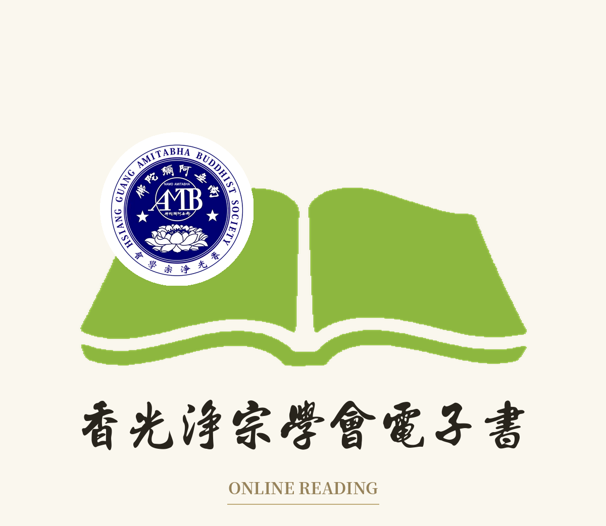

ONLINE READING · 電子書一覽表
以下法寶均提供線上翻頁閱讀與下載
未完成線上版之書目標示「準備中」陸續更新
找不到符合的書籍
精選 · 已上線
高僧阿呆魚
線上閱讀
淨土典籍
A
淨土合刊
Aa
Aa01
淨土五經讀本(淨空法師選定)
線上閱讀
Aa02
淨土五經一論
線上閱讀
阿彌陀經
Ab
阿彌陀經
Ab01
Ab0101
佛說阿彌陀經
線上閱讀
Ab0102
佛說阿彌陀經摘注接蒙義蘊合刊 (李炳南老居士講述)
線上閱讀
Ab0103
佛說阿彌陀經通贊疏(窺基撰)
線上閱讀
Ab0104
彌陀圓中鈔(沙門傳燈鈔)
線上閱讀
Ab0105
阿彌陀經疏鈔演義 (淨空法師)
線上閱讀
阿彌陀經要解
Ab02
Ab0201
彌陀要解便蒙鈔(蕅益大師要解 )
線上閱讀
Ab0202
佛說阿彌陀經要解(藕益大師)
線上閱讀
Ab0203
佛說阿彌陀經要解講記
線上閱讀
Ab0204
佛說阿彌陀經要解講義(藕益大師要解)
線上閱讀
Ab0205
彌陀要解研習報告 (淨空老法師編述)
線上閱讀
無量壽經
Ac
Ac01
佛說大乘無量壽莊嚴清淨平等覺經會集本(夏蓮居)
線上閱讀
Ac02
佛說大乘無量壽莊嚴清淨平等覺經會集本(雪盧老人注)
線上閱讀
Ac03
佛說大乘無量壽莊嚴清淨平等覺經卷首(淨空法師述)
線上閱讀
Ac04
佛說大乘無量壽莊嚴清淨平等覺經卷首(淨空法師述)更新版
線上閱讀
Ac05
佛說大乘無量壽莊嚴清淨平等覺經科會(淨空老法師著)
線上閱讀
Ac06
淨土大經科註參考資料【上冊】(上勝下妙法師)
線上閱讀
Ac07
淨土大經科註參考資料【下冊】(上勝下妙法師)
線上閱讀
Ac08
佛說大乘無量壽莊嚴清淨平等覺經科註【上冊】(淨空法師 科判 黃念祖老居士 註解)
線上閱讀
Ac09
佛說大乘無量壽莊嚴清淨平等覺經科註【下冊】(淨空法師 科判 黃念祖老居士 註解)
線上閱讀
Ac10
漢譯無量壽經會譯對照修訂版(林祺安編)
線上閱讀
Ac11
無量壽經義疏 佛說阿彌陀經義記(釋吉藏撰 )
線上閱讀
Ac12
大乘無量壽經菁華(淨空老法師講述)
線上閱讀
Ac13
佛說大乘無量壽莊嚴清淨平等覺經解(黃念祖居士著)
線上閱讀
Ac14
佛說無量壽經義疏 (慧遠撰疏)
準備中
Ac15
大乘無量壽莊嚴清淨平等覺經親聞記
線上閱讀
Ac16
無量壽經起信論(彭際清居士述)
線上閱讀
Ac17
大乘無量壽經簡註易解
準備中
Ac18
阿彌陀佛48願易解/極樂世界29種莊嚴合刊(净空老法師述)
準備中
觀無量壽經
Ad
Ad01
佛說觀無量壽佛經(彊良耶舍譯)
準備中
Ad02
觀經四帖疏(善導大師)
準備中
Ad03
佛說觀無量壽佛經直指疏(沙門灌頂續法述疏)
準備中
Ad04
觀無量壽佛經疏精華
準備中
Ad05
佛說觀無量壽佛經義疏(隋慧遠撰)
準備中
Ad06
佛說觀無量壽佛經義疏正觀記(戒度法師記)
準備中
Ad07
佛說觀無量壽佛經疏
準備中
Ad08
佛說觀無量壽佛經疏鈔演義(諦閑老法師)
準備中
Ad09
觀經智者疏妙宗鈔 (智者大師疏知禮法師鈔)
準備中
Ad10
觀無量壽佛經疏上品上生章講記/大勢至菩薩念佛圓通章親聞記合刊 (淨空法師講述)
準備中
普賢行願品
Ae
普賢行願品《四十華嚴》
Ae02
Ae0201
《四十華嚴》第一冊卷1-卷10(三藏法師譯)
準備中
Ae0202
《四十華嚴》第二冊卷11-卷20(三藏法師譯)
準備中
Ae0203
《四十華嚴》第三冊卷21-卷30(三藏法師譯)
準備中
Ae0204
《四十華嚴》第四冊卷31-卷40(三藏法師)
準備中
普賢行願品注疏
Ae03
Ae0301
普賢行願品別行疏鈔(清涼國師疏.圭夆大師鈔)
準備中
Ae0302
普賢行願品輯要疏(釋諦閑法師述)
準備中
Ae0303
普賢大士行願的啟示(淨空老法師述)
準備中
大勢至菩薩念佛圓通章
Af
Af01
大勢至菩薩念佛圓通章研習報告講義(淨空老和尚編述)
準備中
Af02
大勢至菩薩念佛圓通章疏鈔(續法法師著)
準備中
往生論
Ag
Ag01
往生論輯注(曇鸞大師)
準備中
其他經論
B
華嚴經
Ba
八十華嚴(未上)
Ba01
Ba0101
八十華嚴經第一冊 (卷一~十)
準備中
Ba0102
八十華嚴經第二冊 (卷十一~廿)
準備中
Ba0103
八十華嚴經第三冊 (卷廿ㄧ~卅)
準備中
Ba0104
八十華嚴經第四冊 (卷卅一~四十)
準備中
Ba0105
八十華嚴經第五冊(卷四一~五十)
準備中
Ba0106
八十華嚴經第六冊 (卷五一~六十)
準備中
Ba0107
八十華嚴經第七冊 (卷六一~七十)
準備中
Ba0108
八十華嚴經第八冊 (卷七一~八十)
準備中
華嚴經
Ba02
Ba0201
華嚴經淨行品-寒山詩合刊
準備中
Ba0202
脩華嚴奧旨妄盡還源觀(賢首國師)
準備中
Ba0203
華嚴念佛三昧論講記
準備中
楞嚴經
Bb
Bb01
大佛頂首楞嚴經清淨明誨章講記(淨空法師)
準備中
Bb02
大佛頂首楞嚴經講義五十陰魔章(圓瑛法師)
準備中
金剛經
Bc
Bc01
金剛經講義節要(淨空法師節錄)
準備中
Bc02
金剛般若研習報告(淨空老法師講述)
準備中
Bc03
從金剛經談到無量壽經/黃念祖居士
準備中
Bc04
金剛般若波羅蜜經 (鳩摩羅什譯.江味農校）
準備中
心經
Bd
Bd01
般若波羅蜜多心經詮注(周止菴居士)
準備中
Bd02
心經講記(淨空法師講述)
準備中
地藏本願經
Be
Be01
地藏菩薩本願經 (三藏沙門實叉難陀譯)
準備中
Be02
地藏菩薩本願經講記-上冊(淨空法師講述)
準備中
Be03
地藏菩薩本願經講記-下冊(淨空法師講述)
準備中
Be04
地藏本願經講記(聖一老法師述)
準備中
Be05
地藏經講記(淨空法師講述)
準備中
Be06
地藏經的啟示超度的理論和事實合刊(淨空老法師)
準備中
菩薩戒
Bf
Bf01
佛說梵網經菩薩戒本解(李圓義居士彙編)
準備中
Bf02
梵網經菩薩戒本(鳩摩羅什譯)
準備中
Bf03
菩薩戒本經出地持戒品中 ( 曇無懺法師譯)
準備中
Bf04
菩薩戒白話淺要複習(道證法師講述)
準備中
其他經論
Bg
Bg01
淨心戒觀法(道宣律師撰)
準備中
Bg02
佛說清淨心經講記.佛說八大人覺經講記.佛說當來變經講記(三合刊)(淨空老法師述)
準備中
Bg03
大乘起信論講話(慈航菩薩講述)
準備中
Bg04
大乘起信論講記(道源長老講述)
準備中
Bg05
大乘百法明門論研究 (天親菩薩造論 )
準備中
Bg06
佛遺教經科會佛遺教經解合刊(蕅益大師著)
準備中
Bg07
六祖壇經講記(淨空法師講述)
準備中
Bg08
佛說長壽滅罪護諸童子陀羅尼經(佛陀波利奉 紹 譯)
準備中
Bg09
八大人覺經講記(淨空法師講述)
準備中
基礎佛學
C
基礎戒律
Ca
Ca01
沙彌律儀要略增註(弘贊律師註)
準備中
Ca02
沙彌律儀要略集註(廣化法師述)
準備中
Ca03
沙彌律儀要略沙彌律儀要略節錄(蓮池大師輯)
準備中
Ca04
三歸傳授(淨空法師講述)
準備中
Ca05
五戒表解及學佛行儀合刊 (懺雲老和尚)
準備中
Ca06
五戒相經箋要集註(廣化老法師注)
準備中
Ca07
南山律在家備覽
準備中
Ca08
在家律學
準備中
Ca09
五戒誦戒儀軌,受八關齋戒法受十善戒法
準備中
Ca10
南山律在家備覽導讀-01宗體篇(弘一大師遺著＼良因法師導讀)
準備中
Ca11
南山律在家備覽導讀-02持犯篇(弘一大師遺著＼良因法師導讀)
準備中
Ca12
南山律在家備覽導讀-03懺悔篇(弘一大師遺著＼良因法師導讀)
準備中
Ca13
南山律在家備覽導讀-04別行篇(弘一大師遺著＼良因法師導讀)
準備中
Ca14
南山律在家備覽導讀05講義篇(弘一大師遺著＼良因法師導讀)
準備中
阿難問事佛吉凶經
Cb
Cb01
阿難問事佛吉凶經 (了凡四訓_俞淨意公遇灶神記太上感應篇_文昌帝君陰騭文)合刊本
準備中
Cb02
阿難問事佛吉凶經講記-學佛行儀合刊(淨空老法師述)
準備中
Cb03
阿難問事佛吉凶經科會(淨空法師講述)
準備中
Cb04
阿難問世佛吉凶經講記(淨空老法師述)
準備中
佛說十善業道經
Cc
Cc01
佛說十善業道經 (淨空法師講述大意)
準備中
Cc02
十善業道經講記(淨空法師講述)
準備中
工具書
Cd
Cd01
佛教常用唄器器物服裝簡述(祥雲法師著)
準備中
基礎佛學
Ce
Ce01
認識佛教(淨空老法師)
準備中
Ce02
淨宗入門(淨空法師講述)
準備中
Ce03
淨宗同學修行守則(淨空法師講述)
準備中
Ce04
發起菩薩殊勝志樂經講記(淨空法師講述)
準備中
Ce05
佛學常識課本(李炳南老居士)
準備中
Ce06
從根本佛法談解行(余紹坡著)
準備中
Ce07
佛教各宗大意(2013年新版)
準備中
Ce08
建設佛化家庭
準備中
Ce09
微觀大千(劉富臺博士)
準備中
Ce10
觀察的藝術(劉富臺博士)
準備中
Ce11
信仰的轉移(釋超塵)
準備中
淨土典籍
D
歷代祖師
Da
善導大師
Da01
Da0101
蓮宗二祖善導大師遺教
準備中
Da0102
善導大師全集 (慧淨法師;淨宗法師 編)
準備中
永明延壽祖師
Da02
Da0201
萬善同歸集(6代永明延壽大師述)
準備中
蓮池大師
Da03
Da0301
蓮池大師新定西方發願文
準備中
Da0302
緇門崇行錄淺述(蓮池大師原著)
準備中
蕅益大師
Da04
Da0401
淨土十要 (上)(蕅益大師)
準備中
Da0402
淨土十要 (下)(蕅益大師)
準備中
Da0403
蕅益大師文選(寶靜法師鑑訂)
準備中
Da0404
靈峰宗論 (上冊) (蕅益大師 著)
準備中
Da0405
靈峰宗論 (下冊) (蕅益大師 著)
準備中
Da0406
蕅益大師全集(全套20冊+總目錄+菩薩戒本經箋要)
準備中
行策大師
Da05
Da0501
淨土警語行策大師淨土警語精華講記(淨空法師)
準備中
省庵大師
Da06
Da0601
勸發菩提心文(省庵大師)
準備中
徹悟大師
Da07
Da0701
徹悟大師遺集(喚醒.了睿輯)
準備中
印光大師
Da08
Da0801
印光大師文鈔論集
準備中
Da0802
印光大師飭終法語
準備中
Da0803
印光大師永思集(陳海量居士編)
準備中
Da0804
印光大師文鈔全集-戒殺放生節錄
準備中
Da0805
印光大師遺教兩要當生成就之佛法(李炳南老居士著)
準備中
Da0806
天下太平之根本(印光大師著)
準備中
Da0807
印光大師全集-問答擷錄(印光大師)
準備中
Da0808
印光法師年譜(沈去疾居士 編著)
準備中
Da0809
印光法師嘉言錄
準備中
Da0810
印光法師嘉言錄續編
準備中
Da0811
印光法師文鈔菁華錄
準備中
Da0812
印光法師文鈔【上冊】
準備中
Da0813
印光法師文鈔【下冊】
準備中
Da0814
印光法師文鈔續編【上冊】
準備中
Da0815
印光法師文鈔續編【下冊】
準備中
Da0816
印光法師文鈔三編【上冊】
準備中
Da0817
印光法師文鈔三編【下冊】
準備中
Da0818
印光大師全集-問答擷錄(印光大師)
準備中
淨空法師
Db
Db01
念佛的功德(淨空老法師講述)
準備中
Db02
成佛之道-念佛法門專題合刊 (淨空法師講述)
準備中
Db03
淨業三福講記(淨空老法師述)
準備中
Db04
念佛成佛(淨空法師講述)
準備中
Db05
學佛答問(一~四) (淨空法師 講述)
準備中
Db06
學佛答問(五) (淨空法師 講述)
準備中
Db07
臨終助念問答(淨空法師主講)
準備中
黃念祖老居士
Dc
Dc01
華嚴念佛三昧論講記(黃念祖居士)
準備中
Dc02
黃念祖老居士著作彙編(上冊)
準備中
Dc03
黃念祖老居士著作彙編(中冊)
準備中
Dc04
黃念祖老居士著作彙編(下冊)
準備中
Dc05
抉擇見(黃念祖居士)
準備中
道證法師
Dd
Dd01
歡喜菩薩的真人真事
準備中
Dd02
傾聽恆河的歌唱
準備中
Dd03
毛毛蟲變蝴蝶之1.2.3集
準備中
Dd04
黑社會變蓮池海會(毛毛蟲變蝴蝶之六)
準備中
Dd05
從樂入樂(毛毛蟲變蝴蝶之七)
準備中
Dd06
墮胎須知毛毛蟲變蝴蝶之棄兒變貴子-合訂本
準備中
Dd07
學醫與學佛 (道證法師)
準備中
Dd08
佛要救你(-道證法師)
準備中
Dd09
清蓮飄香(毛毛蟲變蝴蝶系列)
準備中
Dd10
癌細胞變快樂佛細胞(道證法師講述)
準備中
淨土典籍
De
De01
西方確指 (覺明妙行菩薩說)
準備中
De02
安樂集(道綽法師撰)
準備中
De03
念佛論(倓虛大師)
準備中
De04
怎樣念佛往生不退成佛 (釋世了敬述)
準備中
De05
思歸集(如岑法師集)
準備中
De06
龍舒增廣淨土文(王龍舒居士)
準備中
De07
蓮公大士淨語(夏蓮居老居士)
準備中
De08
助念生西須知(台中蓮社編著)
準備中
De09
念佛感應見聞記(林看治老居著)
準備中
De10
蓮宗正範(陳海量居士編輯)
準備中
De11
徑中徑又徑徵義(徐槐廷著)
準備中
De12
蓮花朵朵開(三寶弟子行芊編)
準備中
De13
李濟華居士遺集
準備中
De14
幻住答問
準備中
De15
改造命運心想事成(了凡四訓講記)( 淨空法師講述)
準備中
De16
改造命運心想事成─了凡四訓講記【注音版】( 淨空法師講述)
準備中
De17
般若淨土中道實相菩提論 (了然法師著)
準備中
De18
入香光室(了然法師 著)
準備中
儒道典籍
E
四書
Ea
Ea01
四書-上冊(孔子)
準備中
Ea02
四書-下冊 (孟子)
準備中
Ea03
四書.老子選粹白話解(陳傳淨編撰)
準備中
德育課本(蔡振绅輯)
Eb
德育課本 初集
Eb01
Eb0101
德育課本 初集第一冊
準備中
Eb0102
德育課本 初集第二冊
準備中
Eb0103
德育課本 初集第三冊
準備中
Eb0104
德育課本 初集第四冊
準備中
德育課本 二集
Eb02
Eb0201
德育課本二集第一冊
準備中
Eb0202
德育課本二集第二冊
準備中
Eb0203
德育課本二集第三冊
準備中
Eb0204
德育課本二集第四冊
準備中
德育課本 三集
Eb03
Eb0301
德育課本 三集第一冊
準備中
Eb0302
德育課本 三集第二冊
準備中
Eb0303
德育課本 三集第三冊
準備中
Eb0304
德育課本 三集第四冊
準備中
德育課本 四集
Eb04
Eb0401
德育課本 四集第一冊
準備中
Eb0402
德育課本 四集第二冊
準備中
Eb0403
德育課本 四集第三冊
準備中
Eb0404
德育課本 四集第四冊
準備中
五種儀規(陳弘謀編)
Ec
Ec01
五種遺規-養正遺規 (陳弘謀編)
準備中
Ec02
五種儀規-訓俗遺規 (陳弘謀編)
準備中
Ec03
五種儀規-教女遺規 (陳弘謀編)
準備中
Ec04
五種遺規-從政遺規(陳弘謀編)
準備中
Ec05
五種儀規-在官法戒錄 (陳弘謀編)
準備中
三字經
Ed
Ed01
三字經(王應麟)
準備中
Ed02
釋教唯識三字經(釋廣真撰)
準備中
Ed03
唯識三字經釋論附講錄(大圓居士)
準備中
Ed04
三字經簡說(林美岑老師)
準備中
Ed05
釋教三字經講話(釋南亭講述)
準備中
弟子規
Ee
Ee01
弟子規(李毓秀)
準備中
Ee02
弟子規簡說(王明泉)
準備中
Ee03
弟子規心得分享
準備中
Ee04
弟子規功過格
準備中
儒道典籍
Ef
Ef01
常禮舉要(李炳南教授編述)
準備中
Ef02
幸福錦囊集(蔡禮旭老師講述)
準備中
Ef03
孝經直解/孝經白話註解合刊(熊至誠/嚴協和 )
準備中
Ef04
胎教的重要 (淨空法師講述)
準備中
Ef05
我們教了孩子什麼(陳文卿)
準備中
Ef06
孝與戒淫淺談青年應有的美德(鐘茂森博士述)
準備中
Ef07
二十四孝圖說(李然)
準備中
Ef08
古文觀止讀本(吳楚材.吳調侯)
準備中
Ef09
新編醒世千家詩(李圓淨)
準備中
Ef10
格言聯璧(金纓)
準備中
Ef11
格言別錄(弘一法師)
準備中
因果典籍
F
太上感應篇
Fa
Fa01
感應篇彙編第一冊
準備中
Fa02
感應篇彙編第二冊
準備中
Fa03
感應篇彙編第三冊
準備中
Fa04
感應篇彙編第四冊
準備中
Fa05
集福消災之道(原名感應篇彙編白話本)(了凡弘法學會)
準備中
Fa06
太上感應篇功過格
準備中
安士全書
Fb
Fb01
文昌帝君陰騭文廣義節錄(安士全書之一)
準備中
Fb02
萬善先資集(安士全書之二)
準備中
Fb03
慾海回狂(安士全書之三)
準備中
Fb04
西歸直指 (安士全書之四)
準備中
Fb05
安士全書名相註釋 第一冊 文昌帝君陰騭文廣義節錄卷上之一(周安士著述)
準備中
Fb06
安士全書名相註釋 第二冊 文昌帝君陰騭文廣義節錄卷上之二(周安士著述)
準備中
Fb07
安士全書名相註釋 第三冊 文昌帝君陰騭文廣義節錄卷下之一(周安士著述)
準備中
Fb08
安士全書名相註釋 第四冊 文昌帝君陰騭文廣義節錄卷下之二(周安士著述)
準備中
Fb09
安士全書名相註釋 第五冊 萬善先資集卷一~卷三 (周安士著述)
準備中
Fb10
安士全書名相註釋 第六冊 萬善先資集卷三~卷四(周安士著述)
準備中
Fb11
安士全書名相註釋 第七冊 欲海回狂集卷一~卷二(周安士著述)
準備中
Fb12
安士全書名相註釋 第八冊 欲海回狂集卷二~卷三(周安士著述)
準備中
Fb13
安士全書名相註釋 第九冊 西歸直指卷一~卷二(周安士著述)
準備中
Fb14
安士全書名相註釋 第十冊 西歸直指卷三~卷四(周安士著述)
準備中
因果典籍
Fc
Fc01
歷史感應統紀語譯(呂富枝/語譯 )
準備中
Fc02
佛說善惡因果經(附三世因果文)
準備中
Fc03
可許則許 (陳海量著)
準備中
Fc04
因果輪迴的科學證明(鍾茂森博士)
準備中
Fc05
物猶如此(徐谦著)
準備中
Fc06
自殺以後的真相(紅葉編著)
準備中
Fc07
等待黎明的時刻(修德法師編述)
準備中
Fc08
改造命運心想事成
準備中
淨公語錄
G
淨空法師說故事
Ga
Ga01
淨空法師說故事(一)
準備中
Ga02
淨空法師說故事(二)
準備中
淨公語錄
Gb
Gb01
老人言(淨空法師)
準備中
Gb02
佛法與人生(淨空法師著)
準備中
Gb03
懺悔-改過後不再造是真懺侮 (淨空法師講述)
準備中
Gb04
晚晴集講記(淨空法師講)
準備中
Gb05
若要佛法興唯有僧讚僧(普賢願海工作室)
準備中
Gb06
學為人師行為世範-早餐開示(一~三合刊)(淨空法師述)
準備中
Gb07
歷年和平會議講演集-淨空老和尚
準備中
Gb08
無住生心集(淨空老法師述)
準備中
Gb09
佛學十四講講記(淨空老法師述)
準備中
Gb10
念力的秘密分享 (淨空老法師述)
準備中
Gb11
學佛答問 (一 ~四 ) (淨空老法師述)
準備中
Gb12
學佛答問 (五) (淨空老法師述)
準備中
著述語錄
H
李炳南老居士
Hb
李炳南老居士全集(全套共17冊)
Hb01
Hb0101
李炳南老居士全集總目錄
準備中
Hb0102
第一冊：大方廣佛華嚴經講述表解佛說阿彌 陀經摘注接蒙 義蘊合刊 1
準備中
Hb0103
第二冊：講經表解（上）
準備中
Hb0104
第三冊：講經表解（下）
準備中
Hb0105
第四冊：大專佛學講座初級教材弘護小品
準備中
Hb0106
第五冊：佛學問答類編（上）
準備中
Hb0107
第六冊：佛學問答類編（中）
準備中
Hb0108
第七冊：佛學問答類編（下）
準備中
Hb0109
第八冊：佛說42章經表注講義無量壽莊嚴清淨平等覺經眉注
準備中
Hb0110
第九冊：修學法要
準備中
Hb0111
第十冊：修學法要續編雪廬述學語錄
準備中
Hb0112
第十一冊：論語講要（上)（下）
準備中
Hb0113
第十二冊:禮記選講中國歷史綱目表重修呂志 選
準備中
Hb0114
第十三冊：詩階述唐
準備中
Hb0115
第十四冊：雪廬詩集（上/下）雪廬寓壹文 存
準備中
Hb0116
第十五冊：黃帝內經選講
準備中
Hb0117
第十六冊：雪廬老人題畫遺
準備中
李炳南老居士
Hb02
Hb0201
雪廬風誼(李炳南老居士)
準備中
Hb0202
佛說四十二章經表注講義(李炳南居士)
準備中
Hb0203
佛學概要十四講表述記
準備中
著述語錄
Hc
Hc01
寒山拾得問對 (等六種合刊)
準備中
Hc02
緇門崇行錄淺述(蓮池大師原著)
準備中
Hc03
憨山大師醒世歌、費閑歌(憨山大師)
準備中
Hc04
修行日知錄(佛遺教經等)
準備中
Hc05
釋門自鏡錄僧訓日記寒笳集等合刊 (唐藍谷沙門懷信集等)
準備中
Hc06
夏雨清涼一、二、三集(智諭老和尚)
準備中
Hc07
寒梅 (廣欽老和尚語錄-自行抄 )
準備中
Hc08
釋門真孝錄(張廣湉輯)
準備中
Hc09
履三寶地(鞭鼓生)
準備中
Hc10
選佛場(鞭鼓生)
準備中
Hc11
訪談修藍博士反思信願行(何美慧博士)
準備中
Hc12
靜老說的話(李明雪記)
準備中
Hc13
竹窗隨筆 (蓮池大師著)
準備中
Hc14
一夢漫言寒笳集(見月律師)
準備中
Hc15
弘一大師別集 (晚晴集、格言別錄)
準備中
佛教傳記
I
I01
阿彌陀佛聖典(范古農居士編)
準備中
I02
釋迦譜 (釋僧祐譔)
準備中
I03
釋迦方志(釋道宣撰)
準備中
I04
蓮宗十三祖傳略(大乘定香精舍)
準備中
I05
弘公道風
準備中
I06
具行禪人修行略傳
準備中
I07
善女人往生錄(凡夫集)
準備中
I08
善男子往生錄
準備中
I09
廣公上人事蹟初編續編合刊
準備中
健康環保
J
環默雨書
Ja
Ja01
高僧阿呆魚(默雨)
線上閱讀
Ja02
事情還不只這樣(默雨)
準備中
Ja03
事情是這樣子的(默雨)
準備中
健康環保
Jb
Jb01
防癌手冊(圓因法師編輯)
準備中
Jb02
壽康寶鑑白話編譯(印光大師增訂)
準備中
Jb03
大道堂養生理論(劉逢軍教授)
準備中
Jb04
電視傷害你想不到的大(吳韻儀)
準備中
Jb05
當醫生宣布你得了癌症(陳美娟)
準備中
Jb06
飲食與健康(張慶祥編述)
準備中
Jb07
蓮海真味
準備中